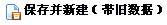
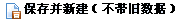
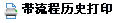
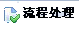
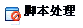
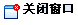
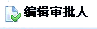
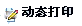

表单操作类型简述
| 前台效果图 | 名称 | 简述 |
| 查询 | 用于对应视图的查询表单功能。 | |
| 保存（不带流程） | 执行保存操作。 | |
| 保存（带流程） | 执行保存并触发流程 | |
| 保存并返回 | 执行保存操作后返回上一级页面。 | |
|  | 保存并新建（带旧数据） | 执行保存操作后并创建新的操作，而且会带有原来的数据。 |
|  | 保存并新建（不带旧数据） | 执行保存操作后并创建新的操作，但不会带有原来的数据。 |
| 保存（不进行校验） | 执行保存操作后不进行数据校验。 | |
| 保存&复制 | 执行保存操作后并进行复制。 | |
| 保存&关闭窗口 | 执行保存操作后关闭窗口。 | |
| 返回 | 返回上一级页面。 | |
| 打印 | 数据表进行打印。 | |
|  | 带流程历史打印 | 打印数据表时并带有流程历史。 |
|  | 流程处理 | 提交给下一个流程进行进一步处理。 |
|  | 脚本处理 | 对脚本进行处理。 |
|  | 关闭窗口 | 把当前的窗口关闭。 |
|  | 编辑审批人 | 对数据信息进行操作、修改的人。 |
| PDF导出 | 数据信息以PDF格式进行导出。(仅支持严格的XHTML规范代码，中文字体仅支持宋体) | |
| 文件下载 | 下载相关文件，文件路径如：”/uploads/aaa.txt”,那么在发布项目的uploads目录下的aaa.txt文件会被下载。 | |
| 电子签章 | 对电子文档进行电子签章。 | |
|  | 动态打印 | 数据进行嵌套打印。用户可根据自己的需求设计打印界面及其字段实现自定义打印。 |
| 跳转 | 跳转到对应的表单 | |
| 流程启动 | 触发流程 |